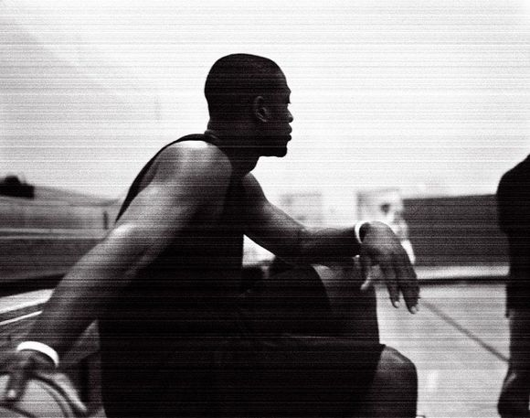

关于韦德
时间：2016.9.16
作者：吴泽发

记得那是2005年的夏天，那时还是个小孩子啥都不懂，跟着大人凑热闹，看完了热火对小牛的总冠军系列赛的第六场赛。最终韦德率领球队拿下了比赛，夺得了总冠军，最后一刻他把篮球扔向空中，尽情地球场上欢呼，他成为了那年NBA上的传奇。从此就跟NBA有了不解之缘，开始关注NBA、关注韦德，幻想有一天成为像他一样的男人。
从那以后，你的每场比赛的锦集、每个精彩进球，我都会反复看好几遍。别人说你坏话，我都会气愤地跟他争论；别人说你好话，我内心也暗暗窃喜，你成为了我的一种信仰。
整个青春记忆，几乎都围绕着你，你成为了我不可或缺的青春片段。渐渐地，我也慢慢长大，你也慢慢变老，但始终不变的是，我爱你的心，只会随着时间地推移，越发越浓。
记得你赛季报销的那一年，我赌气地不看一场NBA比赛；记得三巨头时代你第一次冲冠失败，我失落了整个暑假；记得重夺总冠军后你用香槟浇灌膝盖，我感动地哭了......
2016年夏天，你从迈阿密热火转投到芝加哥公牛，我知道，那是你的故乡，梦想开始的地方；我知道，你对这次决定的不舍，十三年的热火，像家一样的地方。我也从一个热火球迷，转变成了公牛球迷，只因你，也期待新赛季你能保持健康的身体，打出不错的表现！
2016年7月24号，是我永远不会忘记的一天。你来北京，我见到了你本人，还有幸地跟你击掌，希望未来的有一天，能有机会跟你合影，我和你，一直以来的梦想，我们的故事会一直延续......